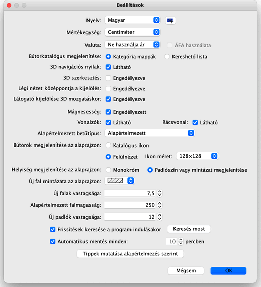

|
|
Be�ll�t�sok szerkeszt�se | ||
|
A be�ll�t�sok m�dos�t�s�hoz v�lassza a Sweet Home 3D > Be�ll�t�sok... men�pontot Mac OS X-en, vagy a F�jl > Be�ll�t�sok... men�pontot egy�b rendszerek alatt. 
A Be�ll�t�sok ablakban tudja kiv�lasztani a program sor�n haszn�lt Nyelvet �s
az alap�rtelmezett M�rt�kegys�get amivel a program a t�vols�gokat �s a
sz�less�geket m�ri. A Kateg�ria mapp�k vagy �s a Kereshet� lista r�di�gombok minden Sweet Home 3D ablakban megv�ltoztatj�k a b�torkatal�gus megjelen�s�t.
A 3D navig�ci�s nyilak jel�l�n�gyzet seg�ts�g�vel megjelen�thati a 3D n�zet bal
fels� sark�ban tal�lhat� nyilakat, melyek seg�tenek
navig�lni 3D n�zetben.
A M�gnesess�g jel�l�n�gyzet enged�lyezi vagy tiltja le a m�gnesess�get az
Alaprajz n�zetben falrajzol�s �s
b�tor elhelyez�s k�zben. Ha kiv�lasztja a Friss�t�sek keres�se a program indul�sakor opci�t, a program minden ind�t�sakor ellen�rzi, el�rhet�-e valamilyen friss�t�s a Sweet Home 3D-hez, �s ha igen, egy p�rbesz�dablakban megjelen�ti. Ellen�rzi tov�bb� a lehets�ges friss�t�seket a telep�tett b�tort�rakhoz (SH3F f�jlok), text�rat�rakhoz (SH3T f�jlok), nyelvt�rakhoz (SH3L f�jlok) �s be�p�l� modulokhoz (SH3P f�jlok), azok be�ll�t�sait�l f�gg�en.
Az Automatikus ment�s minden xx percben mez�ben be�rt �rt�k alapj�n a megadott
percenk�nt ment�s k�sz�l minden nyitott f�jlr�l. Ezek a ment�sek k�l�n f�jlba ker�lnek
�s a helyre�ll�t�shoz lesznek felhaszn�lva a Sweet Home 3D k�vetkez� futtat�sakor, ha
a program �sszeomlik.
|


|